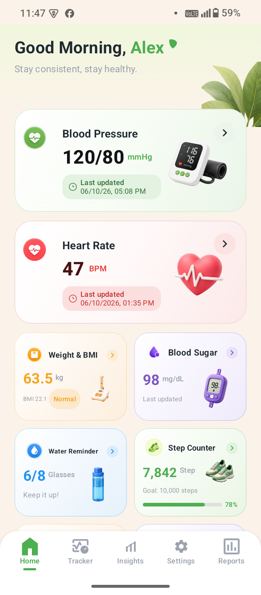
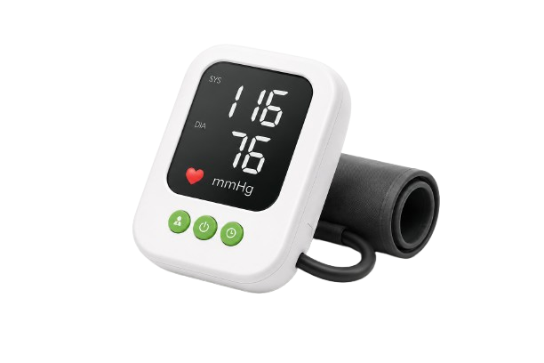
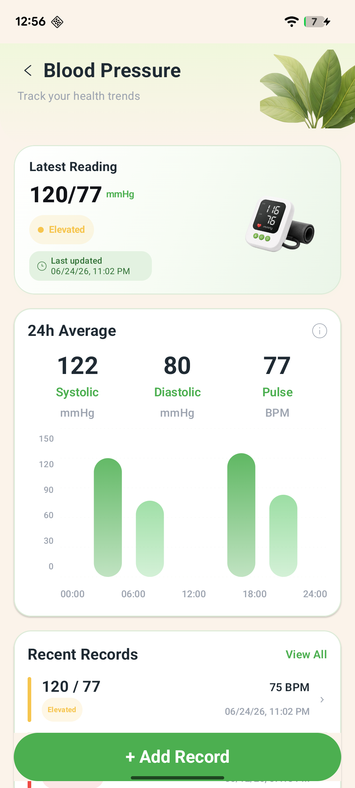
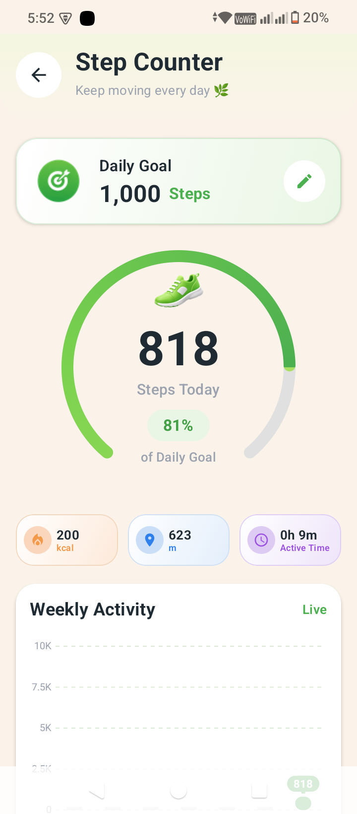
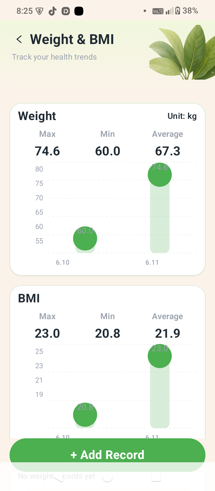
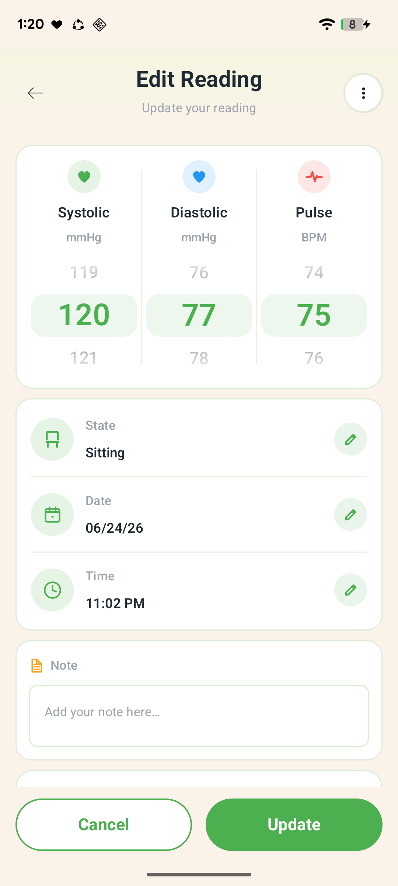

Blood Pressure
Log systolic, diastolic and pulse with body state, date, time and notes. Readings are instantly classified as Normal, Elevated, High or Critical.
24h average · TrendsHealth Mate keeps blood pressure, blood sugar, heart rate, weight & BMI, water intake and daily steps together in a single tracker — with instant status ranges, weekly trends and shareable reports. No account, no cloud, no ads in the way of your numbers.


Each module has its own dashboard, history and statistics — and every reading feeds the same weekly trends, insights and exported report.
Log systolic, diastolic and pulse with body state, date, time and notes. Readings are instantly classified as Normal, Elevated, High or Critical.
24h average · TrendsTrack fasting, before/after meal, random and bedtime readings in mg/dL, note whether insulin was taken, and watch your 3-day and 7-day averages.
Diabetes-readyRecord resting and post-activity BPM alongside your BP entries, so pulse always sits next to the reading that produced it.
Pulse historyEnter weight and height in the units you think in — kg or lb, cm or ft/in — and BMI is computed for you, with max / min / average charts and a plain-language category.
Auto BMISet a daily glass goal and get gentle nudges through the day. Your intake ring fills as you log, and resets cleanly every morning.
Scheduled remindersAn on-device pedometer using your phone's motion sensor — daily goal ring, calories, distance, active time and a live weekly activity chart.
No wearable neededA health snapshot across every module, weekly and monthly comparisons, dynamic insights and readable articles on BP, sugar, heart, weight and diet.
Weekly & monthlyNever miss a measurement. Schedule reminders for readings and medication, delivered by the system alarm so they fire even after a reboot.
Reboot-safeOne tap builds a complete CSV of every BP, sugar, heart-rate and weight record, then hands it to the Android share sheet — email it to your doctor.
Doctor-friendlyWarm cream backgrounds, soft green accents and big, honest numbers — nothing between you and the reading you came to check.
Every vital, one scroll

24h average & recent records

Goal ring, kcal, distance

Max · min · average

State, time & notes
A short onboarding asks for your name and a step goal. No email, no password, no account to create.
Pick a module, dial in the numbers, add body state and a note if you want. Date and time are filled in for you and stay editable.
Each entry updates your averages, weekly chart and status range immediately — and every record stays editable or deletable from history.
Export a full CSV from Reports or Settings and send it straight from the Android share sheet.
Every reading you save is colour-coded against these reference ranges, so a glance at your history tells you where you stand.
| Category | mmHg |
|---|---|
| Normal | < 120 / < 80 |
| Elevated | 120–129 / < 80 |
| Stage 1 | 130–139 / 80–89 |
| Stage 2 | ≥ 140 / ≥ 90 |
| Crisis | > 180 / > 120 |
| Measurement | mg/dL |
|---|---|
| Fasting, normal | 70–99 |
| Fasting, prediabetes | 100–125 |
| Fasting, diabetes | ≥ 126 |
| After meal, normal | < 140 |
| After meal, high | ≥ 200 |
| Measure | Healthy |
|---|---|
| Resting pulse | 60–100 BPM |
| BMI underweight | < 18.5 |
| BMI normal | 18.5–24.9 |
| BMI overweight | 25–29.9 |
| BMI obese | ≥ 30 |
These are general adult reference ranges shown for convenience. Health Mate is a personal wellness tracker — it does not diagnose, treat or give medical advice. Always talk to a qualified clinician about your results.
Health Mate stores every reading in a local database on your device. There is no account, no server, no analytics profile and no third-party data sale. The only way your data travels is when you export it and choose where to send it.
Readings live in an on-device database and are removed with the app.
No email, no password, no sign-in wall in front of your own numbers.
Activity recognition for steps and notifications for reminders. That's it.
CSV export is manual and goes wherever you point the share sheet.
The things people ask about most — setup, troubleshooting and how to get your data out.
Tap a card on the Home dashboard — or open the Tracker tab and choose a module — then tap + Add Record. Set your numbers, pick a body state, adjust the date and time if needed, and save.
Go to Settings → Notifications to manage reminder preferences, then set your water goal and schedule in the Water Reminder module. Allow the notification permission when prompted, or reminders cannot be delivered.
Grant the Physical activity permission, then exclude Health Mate from battery optimisation so Android does not stop the counter in the background. Some devices only update the sensor while the screen is on — pull to refresh on the Step Counter screen to sync.
Open Settings → Export Your Data, or use the export action on the Reports screen. Health Mate builds a CSV of every blood pressure, blood sugar, heart-rate and weight record and opens the share sheet so you can email or save it.
Tap the record in Recent Records or All History to open it, use the menu in the top-right to switch to edit mode, then update or delete it. Averages and charts recalculate straight away.
Because data is stored only on your device, export a CSV before switching phones. There is no cloud account to sign back into — that is deliberate, and it is why the export button matters.
| Permission | Used for |
|---|---|
| Physical activity | Reading the step sensor |
| Notifications | Water, reading & medication reminders |
| Foreground service (health) | Accurate background step counting |
| Exact alarms | Reminders firing on time |
| Run at startup | Restoring reminders after a reboot |
| Internet | Opening Play Store & web links only |
No permission is used to transmit your health records — see section 4 of the privacy policy for the full explanation.
Yes. Every feature — logging, charts, reminders, the step counter and CSV export — runs entirely on your device. You can put the phone in airplane mode and nothing changes.
No. Readings are entered by hand from whatever monitor you already own, and the step counter uses your phone's built-in motion sensor.
Yes. Open any record from history, switch it into edit mode, and update or delete it. All your averages and charts recalculate immediately.
Use Export Your Data in Settings, or the export action in Reports. Health Mate builds a CSV of every blood pressure, blood sugar, heart-rate and weight record and opens the Android share sheet so you can email, print or save it.
That permission is what lets the phone's step sensor report your daily steps. If you decline it, every other module still works — you just won't see step counts.
No. Health Mate is a personal wellness tracker for keeping your own records organised. It does not diagnose conditions or replace professional medical advice.
It's deleted with the app, because it was only ever stored locally. Export a CSV first if you want to keep your history.
Check that notifications are still allowed for Health Mate in Android Settings, and that the app is excluded from battery optimisation. Aggressive battery savers on some devices will silently cancel scheduled alarms.
Step data comes from the phone's hardware sensor, which resets when the device restarts. Health Mate stores a daily summary so past days stay intact. If today's number looks low, open the Step Counter screen and refresh to resync with the sensor.
BMI is calculated from the weight and height you entered on that record. Open the record in edit mode, correct the height (cm or ft/in) or weight (kg or lb), and the BMI and its category recalculate on save.
Charts need at least one saved record in the selected period. Add a reading, or widen the date range on the Reports screen using Custom range.
Records are stored locally and are removed when the app is uninstalled or its storage is cleared. We have no server copy to restore from — export a CSV regularly if you want a long-term archive.
Last updated: 18 September 2026 · Applies to the Health Mate Android app
(com.example.bloodpressure)
Health Mate is built to be a private notebook for your health readings. Everything you enter — blood pressure, blood sugar, heart rate, weight, water intake, steps, notes and reminders — is written to a database on your own phone. We do not operate a server that receives your health data, we do not ask you to create an account, and we do not sell or rent your information to anyone.
No account. No cloud sync. No data sale. The only time your readings leave your device is when you personally use the export feature and choose an app to send the file to.
All health records are stored in a local database file inside the app's private storage area on your device. Preferences and goals are stored in the app's private settings storage. These locations are sandboxed by Android: other apps cannot read them.
Health Mate has no backend service for your health data. Nothing is uploaded, mirrored or backed up to servers we control.
You can revoke any of these at any time in Android Settings → Apps → Health Mate → Permissions.
The export feature builds a CSV file containing your records and hands it to Android's standard share sheet. At that point you choose the destination — email, a messaging app, cloud storage, a printer. Once the file leaves Health Mate it is governed by the privacy policy of whichever app or service you selected, not by this one.
Exported files are written to the app's temporary cache and shared through a secure file provider.
Health Mate does not embed advertising networks or analytics SDKs that profile you, and it does not send your health records to any third party. Links that open the Google Play Store are handled by Google under their own terms and privacy policy.
Keep a copy first. Export a CSV before uninstalling or clearing storage — deleted local data cannot be recovered by us.
Health Mate is intended for general audiences and is not directed at children under 13. We do not knowingly collect personal information from children. As all data stays on-device and no account is created, no child's information is transmitted to us.
Privacy laws such as the GDPR and CCPA give you rights to access, correct, export and erase your personal data. Health Mate satisfies these directly in the app: your records are visible and editable in full, exportable as CSV, and erasable record-by-record or all at once. There is no request to file with us, because there is no copy of your data held by us.
Health Mate is not a medical device and does not provide medical advice, diagnosis or treatment. Reference ranges shown in the app and on this website are general adult guidance for convenience only. Readings are entered by you and are only as accurate as the monitor and method you used. Never delay seeking professional advice because of something you saw in this app, and contact emergency services immediately if you believe you are having a medical emergency.
If this policy changes, the updated version will be published on this page with a new "last updated" date. Material changes affecting how data is handled will also be noted in the app's release notes.
Questions about this policy or about how Health Mate handles data? Reach us via the developer contact listed on our Google Play developer page, or through Settings → Rate Me in the app.
Health Mate is a free Android app from UtilEdge. Install it, log your first reading, and let the trends do the rest.
Android 7.0 (Nougat) and above · Free · No account required